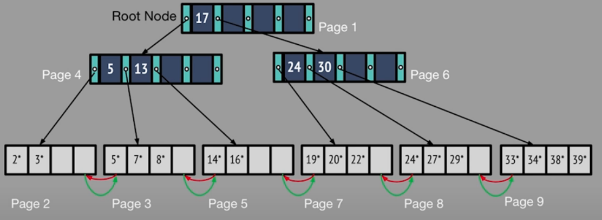

MIT 6.830 数据库实验 Lab 5 实验报告
摘要
Lab 5 要求实现 B + 树索引的相关逻辑，包含查找、插入、删除等，过程中需要维护 B + 树的阶性质。索引是一种数据结构，用于实现在某个字段上快速地查找和修改数据记录。对于常访问的字段，构建索引是很有必要的，B+ 树是最为广泛使用的数据库索引。
理论知识
索引用于加快高频字段的查找效率，例如用户 ID 这种字段，基本哪里都要用，每次都做全表扫描是不现实的。索引和记录间形成了一个一对一（多）的关系，取决于索引的键。下面先从简单的搜索树开始，对索引进行介绍。
高扇出搜索树
先考虑简单的情况，在磁盘上按某个字段对表进行了排序。这种情况下不需要记录前后指针，因为物理上这些页面都是按序排列的。然后需要构建索引。为什么不用二分查找呢，因为二分查找也会导致 \(log_2N\) 的页面 IO，是比较低效的。
可以构建一个 <key, Record> 的索引，由于 record
可能很大，而 key 很小，这种存储也很低效。因此可以使用指向 Page
的指针，<key,
PageId>，构建这样的一个搜索文件，在页面内完成二分查找。
这种算法是复杂度与之前的二分查找类似，只是常数更小，因为每个页面能存储更多的索引。这个过程可以递归完成，直到最顶层的索引只需要记录在一个页面中，变成了一个多叉的搜索树。
在该树下进行二分查找时，会在每个节点完成二分查找，然后定位下一层的节点，直到找到页面内。复杂度为 \(log_F(\#Pages)\)，F 为节点的扇出（相较于 2
有了很大改进）。 分析该算法可知，该算法具有以下特点：
- 支持连续扫描。因为数据还是连续存储的
- 高扇出。因为索引记录比记录小很多，一个页面可以存储很多条索引。
- 不支持插入。当需要插入时，可能会导致页面溢出，这种情况需要后接页面形成链表。当插入过多时，就退化成了线性扫描。
上述这种算法称为 ISAM（Indexed Sequential Access Method），上世纪由 IBM 提出。
B + 树
B + 树与上面的搜索树相似，也是一种多叉搜索树，但它支持动态插入，而且总是平衡的。B + 树的阶记为 d，每个内部节点（根节点除外）的子节点数量需要处在 [d,2d] 之间，每个节点的最大扇出是 2d+1，即 2d 个子节点划分得到 2d+1 个区间。B + 树的叶子节点上保存了左右兄弟的指针，可用于线性扫描。

B + 树与 ISAM 的区别在于，在底层的叶子页面上，不需要严格按顺序排列，如上图所示。Page 3 和 Page 5 是邻居的关系，在磁盘上中间还隔着 Page 4。但是叶子节点间的前后指针使得可以遍历叶子页面。这也允许了动态地插入和删除。
典型设置，B + 树的阶为 1600，fill-factor 为 67%（叶子页面的记录占比）
- 平均扇出为 2144
- 假设是 128KB 的页面，每条记录 40B
- 高度为 1 的树，\(2144^2=4,596,736\) records
- 高度为 2 的树，\(2144^3=9,855,401,984\) records 高
高度为 2 的 B + 树就可以容纳近 10 亿的数据，B + 树会非常的矮，进而提高查找效率。B + 树的高度很少超过 3 和 4。
查找：B + 树的查找与 ISAM 类似，从根节点起，在内部节点内做二分查找定位子节点，直到定位至叶子页面，再在页面内做二分查找。
插入：
- 当要插入的页面还有空间时，可以直接在页面内插入并排序。
- 当没有空间时，需要新建页面，并将一半的数据转移到新页面，将新页面插入到父节点中
- 如果父节点也满了，递归向上
删除：删去元组后，可能会导致页面不满足阶约束，可以选择：
- 直接忽略：数据库场景中，一般插入比删除多，因此删除多出来的空间可以保留，等待后续插入即可
- 维护约束：
- 当页面不满足约束时，从兄弟页面匀一些多余的元组过来
- 如果兄弟页面也没有多余的，就需要合并两个页面，递归向上删除节点
Exercise
Preliminary
首先，先介绍下 SimpleDB 的 B + 树是怎么设计的。B + 树的页面被分为四种：
- BTreeHeaderPage：保存 B + 树索引文件的首部信息
- BTreeRootPtrPage：用于保存 B + 树根节点的指向，类似一个假根节点，避免插入过程中根节点变化
- BTreeInternalPage：非叶子节点，保存 m 个分界点以及 m+1 个子节点
- BTreeLeafPage：叶子结点，保存元组数据，以及左右兄弟指针
重点需要打交道的是最后两种，它们继承了抽象类 BtreePage，每个页面内包含一个父指针，用于处理递归向上的逻辑。BTreeInternalPage 暴露了一个 Iterator<BTreeEntry>，其中 BTreeEntry 包含以下属性：
- key：一个值，代表分界点
- leftChildId：左孩子的页面 ID
- rightChildId：右孩子的页面 ID
一个 BTreeInternalPage 保存 m 个分界点，即 m+1 个子节点。
Search
首先，要实现的是查找方法，findLeafPage()，该方法接收一个页面和 Field，返回这个值对应的叶子页面。上面提到，正常在节点内应该是使用二分查找找到对应的孩子节点。由于 BTreeInternalPage 只对外暴露了 Iterator<BTreeEntry>
iterator() 方法，这里只能使用遍历的方法，找到孩子节点对应的值区间。再递归查找直到找到叶子页面。
Insert （Split）
然后来到了重头戏，B + 树的插入。Lab 里将拆分节点分为了两个方法，需要分别实现：
splitLeafPage()：拆分叶子结点，可能需要递归调用父节点的拆分splitInernalPage()：拆分非叶子节点，可能需要递归调用父节点的拆分
拆分节点的逻辑可以分为下面几步：
- 新建空白页面，转移一半的数据到新页面，一般是把值较大的一半转移过去
- 判断父节点是否有空槽，没有的话递归拆父节点
- 将新页面关联到父页面
- 维护两个页面和父页面间的指向
- 在父页面新建 entry，key 为大页面的最小值， 左右孩子分别为原页面和新页面
- 对于叶子结点，维护左右兄弟指针
这里需要注意的是，要把修改后的页面更新在 dirtypages 中，否则会出现读取不一致的现象。Lab 提供了递归的拆分辅助方法，名为 getParentWithEmptySlots，其会判断父页面中是否有空槽，没有的话调用 splitInternalPage 将其拆分，返回一个带有空槽的父页面。
Delete (Steal)
这个 exercise 要求实现带 “偷取” 逻辑。当一个页面不满足半满约束时，需要从它的兄弟页面中匀一些多余的数据过来。根据页面、兄弟的类型，这部分逻辑被分散在三个方法中：
stealFromLeafPage：叶子结点间的偷取，isRightSibling参数标识是否是右侧兄弟stealFromLeftInternalPage：从左侧内部节点偷取stealFromRightInternalPage：从右侧内部节点偷取
偷取的逻辑可以分为下面几步：
- 均匀地把数据匀过去，对于每条数据
- 如果是叶子页面的元组记录，转移即可
- 如果是内部节点的 key 和 child 记录，需要新建 Entry 插入
- 更新父节点中 Entry 的 key 值，需要根据左右关系，选择大页面中的最小值作为新的 key 值
- 更新父节点指向关系
Delete（Merge）
当偷取已经不能满足需要的时候，需要合并两个均达不到半满的节点。同样的，根据节点类型，可以分为：
mergeLeafPages：合并两个叶子结点mergeInternalPages：合并内部节点
合并可以看成偷取的一种极端情况，将两个节点所有的数据都匀到一个节点中，然后删除掉空页面以及父节点中的对应 entry。这个过程中也可能会导致递归向上删除。Lab 提供了 deleteParentEntry 的工具方法来处理删除父节点的 entry 后不满足半满约束的情况，会调用 handleMinOccupancyPage 根据情况调用偷取和合并方法。
当四个 exercise 做完，理论上已经可以通过这四个 exercise 的所有 Test。由于 SimpleDB 本身是使用的页面级别的锁，不存在意向锁的 phantom 问题，如果锁实现正确的话，应该也可以通过 BTreeNextKeyLockingTest 和 BTreeDeadlockTest。如果到目前为止一切都正确，应该可以通过一个很难的 BTreeTest。
总结
本次 Lab 主要完成了 B + 树的增删查逻辑。Lab 提供了 B + 树索引的整体框架，只需要实现核心的增删查逻辑即可。B + 树还是一个非常复杂的数据结构，自己从头实现的话估计得很久。不过经过这个 Lab，对 B + 树的操作有了更深的认识。